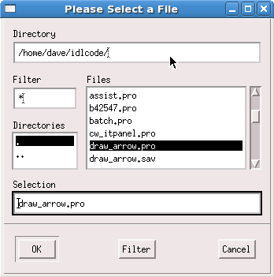
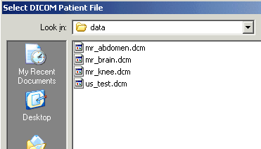
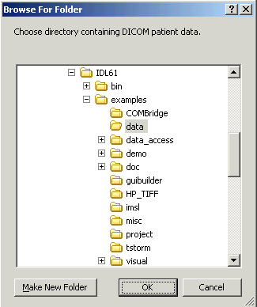

The DIALOG_PICKFILE function allows you to i nteractively select a file, or multiple files, using the platform’s own native graphical file selection dialog. You can also enter the name of a file that does not exist (see the description of the WRITE keyword). When the DIRECTORY keyword is set, you can select a directory (or create and select a directory on Windows) using the Browse for Folder dialog.
On Microsoft Windows systems, DIALOG_PICKFILE uses the same file selection interface as the Windows Explorer and most standard Windows applications.
Once the file selection dialog has been displayed, you can enter a file name manually by typing the name in the File name field. File names can be entered as they appear in the Windows Explorer, including spaces. If the MULTIPLE_FILES keyword is set, each file name should be surrounded by double quotes, and the file names should be separated by spaces. For example, to select two files named First File.txt and Second File.txt , you would enter the following in the File name field:
"First File.txt" "Second File.txt"
On UNIX and Macintosh systems, DIALOG_PICKFILE uses a standard Motif file selection interface.

To use the Motif file selection interface:
Navigate to a directory either by typing the full directory path in the Directory field or by using the list in the Directories field to move up and down through the directory list.
Limit the list of files and directories by entering a string in the Filter field and clicking Filter .
Select a file by clicking in the Files field and clicking OK.
When using DIALOG_PICKFILE with the DIRECTORY keyword, click on a directory name in either the Directories or Files field and click OK.
Once the file selection dialog has been displayed, you can enter a file name manually by typing the name in the Selection field. To enter a file name that includes a space character, escape the space character with the “\” character. Similarly, if the file name includes the “\” character, escape the literal “\” with another “\” character. If the MULTIPLE_FILES keyword is set, file names should be separated by spaces. For example, to select two files named First File.txt and Back\slash File.txt , you would enter the following in the Selection field:
First\ File.txt Back\\slash\ File.txt
Result = DIALOG_PICKFILE( [, DEFAULT_EXTENSION = string ] [, / DIRECTORY ] [, DIALOG_PARENT = widget_id ] [, DISPLAY_NAME = string ] [, FILE = string ] [, FILTER = string/string array ] [, / FIX_FILTER ] [, GET_PATH = variable ] [, GROUP = widget_id ] [, / MULTIPLE_FILES ] [, / MUST_EXIST ] [, / OVERWRITE_PROMPT ] [, PATH = string ] [, / READ | , / WRITE ] [, RESOURCE_NAME = string ] [, TITLE = string ] )
When the DIRECTORY keyword is not specified, DIALOG_PICKFILE returns a string array that contains the full path name of the selected file or files. If no file is selected, DIALOG_PICKFILE returns an empty string.
When the DIRECTORY keyword is specified, DIALOG_PICKFILE returns a string array that contains the full path of the selected directory.
Set this keyword to a scalar string representing the default extension to be appended onto the returned file name or names. If the returned file name already has an extension, then the value set for this keyword is not appended. (See the discussion of the WRITE keyword for additional details on the behavior of this keyword.) The string value set for this keyword should not include a period (.).
Note: This keyword only applies to file names typed into the dialog. This keyword does not apply to files selected within the dialog.
Set this keyword to the widget ID of a widget to be used as the parent of this dialog.
Set this keyword to display only the existing directories in the directory specified by the PATH keyword. If a path is not specified, setting this keyword shows directories in the current directory. The Browse for Folder dialog is opened to the directory specified by the path definition. Individual files are not displayed. The return value contains the path of the directory selected, or directory created and selected by the user.
Set this keyword equal to a string that specifies the name of the X Windows display on which the dialog should be displayed. This keyword is ignored on Microsoft Windows platforms.
Set this keyword to a scalar string that contains the name of the initial file selection. This keyword is useful for specifying a default filename.
On Windows, this keyword also has the effect of filtering the file list if a wildcard is used, but this keyword should be used to specify a specific filename. To list only files of a certain type, use the FILTER keyword.
Set this keyword to a string value or an array of strings specifying the file types to be displayed in the file list. This keyword is used to reduce the number of files displayed in the file list. The user can modify the filter unless the FIX_FILTER keyword is set. If the value contains a vector of strings, multiple filters are used to filter the files. The filter *.* is automatically added to any filter you specify.
For example, to display only files of type .jpg , .tif , or .png in the file selection window, you could use the following code:
filters = ['*.jpg', '*.tif', '*.png']
file = DIALOG_PICKFILE(/READ, FILTER = filters)
The filter list shown above is displayed as five options in the dialog:
*.jpg, *.tif, *.png
*.jpg
*.tif
*.png
*.*
Multiple file types can be included in a single filter by providing a semicolon-separated list of types within the string. For example, to account for different extensions used for similar file types, you could use the following code:
filters = ['*.jpg;*.jpeg', '*.tif;*.tiff', '*.png']
file = DIALOG_PICKFILE(/READ, FILTER = filters)
The filter list shown above is displayed as five options in the dialog:
*.jpg, *.jpeg, *.tif, *.tiff, *.png
*.jpg, *.jpeg
*.tif, *.tiff
*.png
*.*
The FILTER keyword can optionally be set equal to an n x 2 array. In this case, the first vector contains the file types, and the second vector contains a list of descriptions that are displayed in the dialog in place of the file type strings. For example:
filters = [['*.jpg;*.jpeg', '*.tif;*.tiff', '*.png', '*.*'], $
['JPEG', 'TIFF', 'Bitmap', 'All files']]
file = DIALOG_PICKFILE(/READ, FILTER = filters)
The filter list shown above is displayed as four options in the dialog:
JPEG
TIFF
Bitmap
All files
Note: When an n x 2 array is provided, the *.* filter is not automatically added to the list. If you want this filter included in the list, you must include it explicitly.
Under Microsoft Windows, the user cannot modify the displayed filter. The user can enter a filter string in the Filename field to interactively update the list of files displayed. For example, entering *.pro in the Filename field causes only .pro files to be displayed.
Note: You can use language catalogs to internationalize this value with strings in particular languages.
See the discussion of the WRITE keyword for additional details on the behavior of this keyword.
When this keyword is set, only files that satisfy the filter can be selected. The user has no ability to modify the filter and the filter is not shown.
Under Microsoft Windows, the filter string can never be modified, but the user can enter a filter string in the Filename field to interactively update the list of files displayed even if FIX_FILTER is set.
Set this keyword to a named variable in which the path of the selection is returned.
This keyword is obsolete and has been replaced by the DIALOG_PARENT keyword. Code that uses the GROUP keyword will continue to function as before, but we suggest that all new code use DIALOG_PARENT.
Set this keyword to allow for multiple file selection in the file-selection dialog. When you set this keyword, the user can select multiple files using the platform-specific selection method. The currently selected files appear in the selection text field of the dialog. With this keyword set, DIALOG_PICKFILE can return a string array that contains the full path name of the selected file or files.
Set this keyword to allow only files that already exist to be selected.
If this keyword is set along with the WRITE keyword and the user selects a file that already exists, then a dialog will be displayed asking if the user wants to replace the existing file or not. For multiple selections, the user is prompted separately for each file. If the user selects No the file selection dialog is displayed again; if the user selects Yes then the selection is allowed. This keyword has no effect unless the WRITE keyword is also set.
Set this keyword to a string that contains the initial path from which to select files. Relative paths are appended to IDL’s current working directory. If this keyword is not set, IDL’s current working directory is used. (See CD for a discussion of IDL’s default current working directory.)
Note: Under Microsoft Windows, if the path specified is not valid, DIALOG_PICKFILE will use the path to the last directory accessed by Windows. This path may have been set by another application . Under UNIX, DIALOG_PICKFILE will display the dialog using the specified path even if it does not exist.
Tip:
To specify a directory relative to IDL’s installation directory, use statements similar to the following:
path = EXPAND_PATH('<IDL_DIR>')+PATH_SEP()+'examples/data'file = DIALOG_PICKFILE(PATH=path)
Set this keyword to make the title of the dialog “Select File to Read”.
Set this keyword equal to a string containing an X Window System resource name to be applied to the dialog.
Set this keyword to a scalar string to be used for the dialog title. If it is not specified, the default title is “Please Select a File”.
Note: You can use language catalogs to internationalize this value with strings in particular languages.
Set this keyword to make the title of the dialog “Select File to Write”.
When the WRITE keyword is set, the values of the DEFAULT_EXTENSION and FILTER keywords combine to determine the filename returned by DIALOG_PICKFILE. The keywords interact in the following way:
| 1. | If the DEFAULT_EXTENSION keyword is not set, no changes are made to the value the user typed in the filename field. |
| 2. | If the DEFAULT_EXTENSION keyword is set but the FILTER keyword is not set, and the user did not type an extension, the default extension is appended. |
| 3. | If both the DEFAULT_EXTENSION keyword and the FILTER keyword are set: |
| A. | If the user typed an extension that is included in the FILTER keyword value, no changes are made to the value the user typed in the filename field. |
| B. | If the user did not type an extension, or typed an extension that is not included in the FILTER keyword value, and selected a valid extension from the filetype dropdown list, the selected extension is appended to the filename the user typed in the filename field. |
| C. | If the user did not type an extension and selected “ * ” or “ *.* ” from the filetype dropdown list, the default extension is appended to the name the user typed in the filename field. |
| D. | If the user typed an extension that is not included in the FILTER keyword value and selected “ * ” or “ *.* ” from the filetype dropdown list, no changes are made to the value the user typed in the filename field. |
Note: The FILTER keyword can specify multiple extensions in a single filter line (for example, FILTER=['*.jpg;*.jpeg', '*.tif;*.tiff'] ). If a filter line containing multiple extensions is selected in the filetype dropdown list, the first extension on the line will be returned.
Create a DIALOG_PICKFILE dialog that lets users select only files with the extension ‘pro’. Use the ‘Select File to Read’ title and store the name of the selected file in the variable file . Enter:
file = DIALOG_PICKFILE(/READ, FILTER = '*.pro')
Create a DIALOG_PICKFILE dialog that allows the user to select a DICOM file. The following code sets the initial path to the data directory contained in the examples directory of the IDL installation directory.
; Allow the user to select a DICOM file.
sFile = DIALOG_PICKFILE(PATH='examples\data', $
TITLE='Select DICOM Patient File', FILTER='*.dcm')
When the DIRECTORY keyword is not set, as in the previous example, the user may select one or more files of the FILTER type from the directory specified by PATH. The TITLE keyword defines the dialog title when DIRECTORY is not specified as shown in a subsection of the dialog in the following figure.
|
 |
Use the DIRECTORY keyword to DIALOG_PICKFILE to open the “Browse for Folder” dialog. The PATH keyword specifies the initial directory selection and the TITLE keyword provides additional instruction to the user in the body of the dialog.
sFolder = DIALOG_PICKFILE(PATH='examples\data', /DIRECTORY, $
TITLE="Choose directory containing DICOM patient data.")
The following figure shows the results of issuing this statement on the Windows platform.
|
 |
|
5.0 |
Introduced |
|
6.0 |
Added DEFAULT_EXTENSION and OVERWRITE_PROMPT keywords |
|
6.1 |
Browse for Folder dialog updated to enable horizontal scrolling (when needed), and to allow for new folder creation on Windows |
|
Pre 6.1 |
Deprecated GROUP keyword |